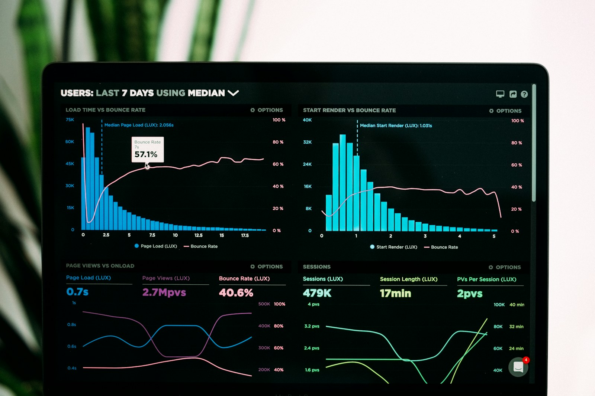

Reviewed practical guides
Find useful AI tools, investing research, and work systems by category.
Guide Market is organized like an editorial library, not a random article feed. Start with the problem you want to solve, compare the relevant guides, and use the linked methodology notes when accuracy, money, or public recommendations matter.
Categories
Choose a topic cluster
These category links improve navigation for readers and help search engines understand how the articles are connected.
Research guides for stocks, ETFs, crypto, AI infrastructure, and building a sensible watchlist.
Travel, Fitness & Life7 guidesUseful AI workflows for travel planning, flights, workouts, meal planning, budgeting, and daily routines.
Education & Careers8 guidesGuides for studying faster, writing better essays, learning languages, teaching, resumes, and interviews.
Business & Marketing6 guidesPractical comparisons for small businesses, customer support, email marketing, real estate, and social content.
Creative, Video & Web7 guidesTools for presentations, TikTok, YouTube, image generation, logo design, podcasts, websites, and visual production.
Development & Research2 guidesSharper workflows for developers and researchers who need useful AI output they can verify.
Editorial process
Why the site is structured this way
Google and readers both reward useful organization. Grouping guides by category makes it easier to compare similar options, continue reading, and avoid isolated pages with no editorial context.
- Pick a reader problem.
- Compare practical tools or research paths.
- Show limitations and verification steps.
- Connect the article to related guides.
Articles
All guides by category
Each card links to a full guide with editorial notes, comparison tables, examples, FAQs, and related articles.
Investing
Research guides for stocks, ETFs, crypto, AI infrastructure, and building a sensible watchlist.
 Investing
Investing
Best Cryptocurrencies to Research in 2026
Research-focused best cryptocurrencies 2026 guide with risks, comparisons, examples, FAQs, and practical notes for informed decisions....
9 minutes Crypto
Crypto
Bitcoin vs Ethereum in 2026: Which One Should You Research First?
Research-focused Bitcoin vs Ethereum 2026 guide with risks, comparisons, examples, FAQs, and practical notes for informed decisions. Updated...
9 minutes StocksBest Stocks to Watch in 2026: A Practical Research List
Research-focused best stocks to watch 2026 guide with risks, comparisons, examples, FAQs, and practical notes for informed decisions. Updated...
10 minutes ETFsBest ETFs for Beginners in 2026: Simple Funds to Research First
Research-focused best ETFs for beginners 2026 guide with risks, comparisons, examples, FAQs, and practical notes for informed decisions....
9 minutes StocksBest AI Stocks to Watch in 2026
Research-focused best AI stocks 2026 guide with risks, comparisons, examples, FAQs, and practical notes for informed decisions. Updated for...
9 minutes
InvestingHow to Build an Investment Watchlist in 2026
Research-focused investment watchlist 2026 guide with risks, comparisons, examples, FAQs, and practical notes for informed decisions. Updated...
9 minutesTravel, Fitness & Life
Useful AI workflows for travel planning, flights, workouts, meal planning, budgeting, and daily routines.
 Travel
Travel
Best AI Tools for Travel Planning in 2026: Complete and Realistic Guide
Best AI Tools for Travel Planning in 2026 guide with real use cases, pros and cons, mistakes to avoid, FAQs, and a practical editorial...
12 minutes TravelBest AI Tools for Finding Cheap Flights
Best AI Tools for Finding Cheap Flights guide with real use cases, pros and cons, mistakes to avoid, FAQs, and a practical editorial...
10 minutes FitnessBest AI Tools for Gym Workouts
Best AI Tools for Gym Workouts guide with real use cases, pros and cons, mistakes to avoid, FAQs, and a practical editorial recommendation....
9 minutes FoodBest AI Apps for Meal Planning
Best AI Apps for Meal Planning guide with real use cases, pros and cons, mistakes to avoid, FAQs, and a practical editorial recommendation....
9 minutes MoneyBest AI Tools for Budgeting Money
Best AI Tools for Budgeting Money guide with real use cases, pros and cons, mistakes to avoid, FAQs, and a practical editorial recommendation.
13 minutes Daily AI
Daily AI
Best AI Tools for Daily Life
Best AI Tools for Daily Life guide with real use cases, pros and cons, mistakes to avoid, FAQs, and a practical editorial recommendation....
13 minutes Daily AIBest AI Tools for Personal Assistants
Best AI Tools for Personal Assistants guide with real use cases, pros and cons, mistakes to avoid, FAQs, and a practical editorial...
13 minutesEducation & Careers
Guides for studying faster, writing better essays, learning languages, teaching, resumes, and interviews.
Best AI Tools for Students
Best AI Tools for Students guide with real use cases, pros and cons, mistakes to avoid, FAQs, and a practical editorial recommendation....
9 minutes Education
Education
Best AI Tools for Studying Faster
Best AI Tools for Studying Faster guide with real use cases, pros and cons, mistakes to avoid, FAQs, and a practical editorial recommendation.
13 minutes Writing
Writing
Best AI Tools for Writing Essays
Best AI Tools for Writing Essays guide with real use cases, pros and cons, mistakes to avoid, FAQs, and a practical editorial recommendation.
9 minutes Learning
Learning
Best AI Tools for Learning Languages
Best AI Tools for Learning Languages guide with real use cases, pros and cons, mistakes to avoid, FAQs, and a practical editorial recommendation.
13 minutes Education
Education
Best AI Tools for Teachers
Best AI Tools for Teachers guide with real use cases, pros and cons, mistakes to avoid, FAQs, and a practical editorial recommendation....
9 minutes EducationBest AI Tools for Online Courses
Best AI Tools for Online Courses guide with real use cases, pros and cons, mistakes to avoid, FAQs, and a practical editorial recommendation.
9 minutes CareersBest AI Resume Builders
Best AI Resume Builders guide with real use cases, pros and cons, mistakes to avoid, FAQs, and a practical editorial recommendation. Updated...
10 minutes Careers
Careers
Best AI Tools for Job Interviews
Best AI Tools for Job Interviews guide with real use cases, pros and cons, mistakes to avoid, FAQs, and a practical editorial recommendation.
9 minutesBusiness & Marketing
Practical comparisons for small businesses, customer support, email marketing, real estate, and social content.
Best AI Tools for Small Businesses
Best AI Tools for Small Businesses guide with real use cases, pros and cons, mistakes to avoid, FAQs, and a practical editorial recommendation.
13 minutes Business
Business
Best AI Customer Support Tools
Best AI Customer Support Tools guide with real use cases, pros and cons, mistakes to avoid, FAQs, and a practical editorial recommendation....
9 minutes MarketingBest AI Email Marketing Tools
Best AI Email Marketing Tools guide with real use cases, pros and cons, mistakes to avoid, FAQs, and a practical editorial recommendation....
9 minutes Business
Business
Best AI Tools for Real Estate Agents
Best AI Tools for Real Estate Agents guide with real use cases, pros and cons, mistakes to avoid, FAQs, and a practical editorial recommendation.
9 minutes Marketing
Marketing
Best AI Tools for Social Media Content
Best AI Tools for Social Media Content guide with real use cases, pros and cons, mistakes to avoid, FAQs, and a practical editorial...
13 minutes Productivity
Productivity
Best AI Tools for Productivity
Best AI Tools for Productivity guide with real use cases, pros and cons, mistakes to avoid, FAQs, and a practical editorial recommendation....
13 minutesCreative, Video & Web
Tools for presentations, TikTok, YouTube, image generation, logo design, podcasts, websites, and visual production.
Best AI Tools for Creating TikTok Videos
Best AI Tools for Creating TikTok Videos guide with real use cases, pros and cons, mistakes to avoid, FAQs, and a practical editorial...
9 minutes VideoBest AI Tools for YouTube Creators
Best AI Tools for YouTube Creators guide with real use cases, pros and cons, mistakes to avoid, FAQs, and a practical editorial recommendation.
9 minutes DesignBest AI Tools for Making Presentations
Best AI Tools for Making Presentations guide with real use cases, pros and cons, mistakes to avoid, FAQs, and a practical editorial...
9 minutes Creative
Creative
Best AI Image Generators
Best AI Image Generators guide with real use cases, pros and cons, mistakes to avoid, FAQs, and a practical editorial recommendation. Updated...
9 minutesBest AI Tools for Logo Design
Best AI Tools for Logo Design guide with real use cases, pros and cons, mistakes to avoid, FAQs, and a practical editorial recommendation....
13 minutes Audio
Audio
Best AI Podcast Tools
Best AI Podcast Tools guide with real use cases, pros and cons, mistakes to avoid, FAQs, and a practical editorial recommendation. Updated...
9 minutes Websites
Websites
Best AI Tools for Website Building
Best AI Tools for Website Building guide with real use cases, pros and cons, mistakes to avoid, FAQs, and a practical editorial recommendation.
13 minutesDevelopment & Research
Sharper workflows for developers and researchers who need useful AI output they can verify.
Best AI Coding Tools for Developers
Best AI Coding Tools for Developers guide with real use cases, pros and cons, mistakes to avoid, FAQs, and a practical editorial recommendation.
10 minutes Research
Research
Best AI Research Tools
Best AI Research Tools guide with real use cases, pros and cons, mistakes to avoid, FAQs, and a practical editorial recommendation. Updated...
9 minutes